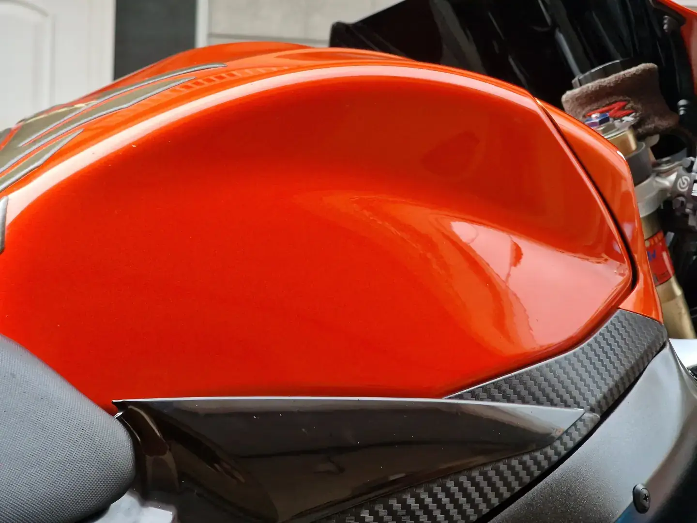
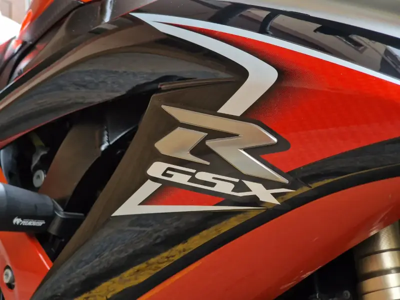
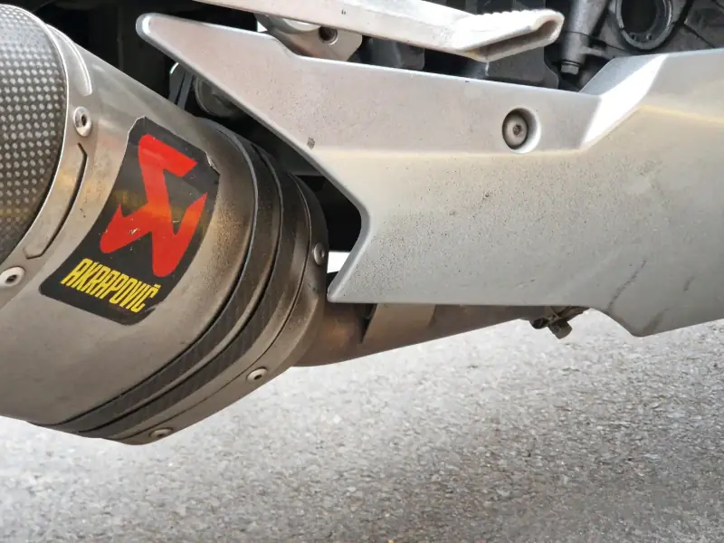
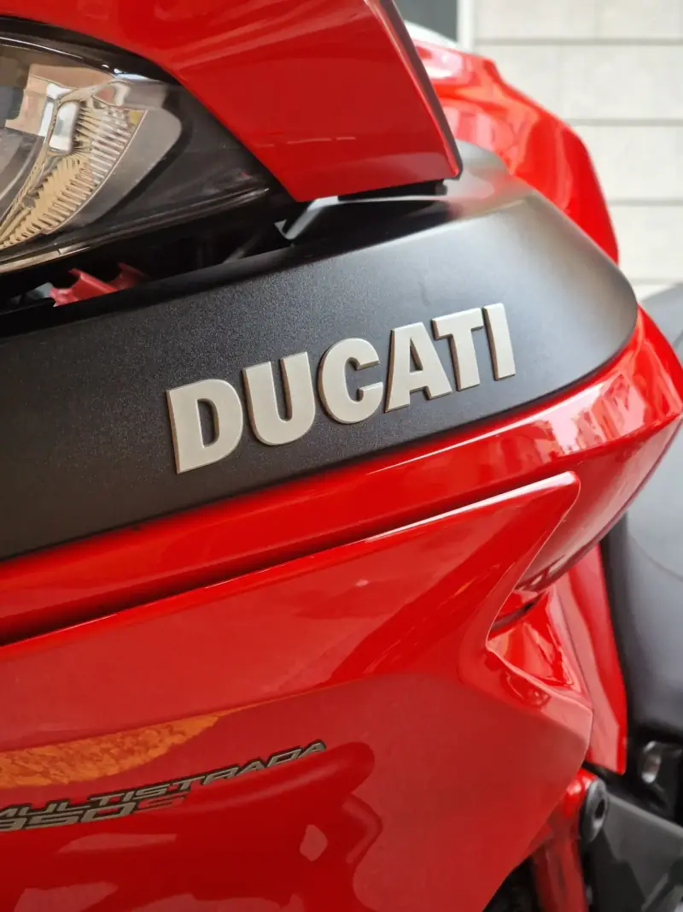
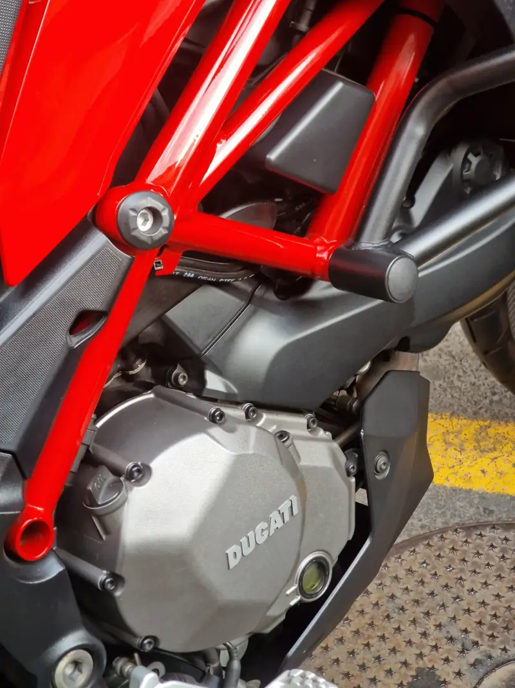
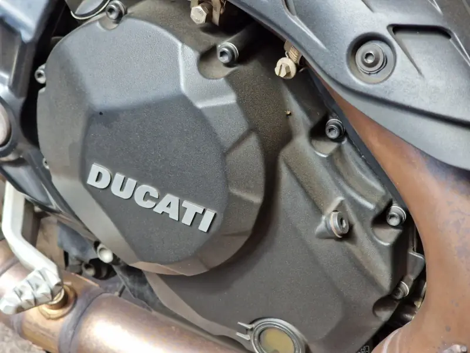
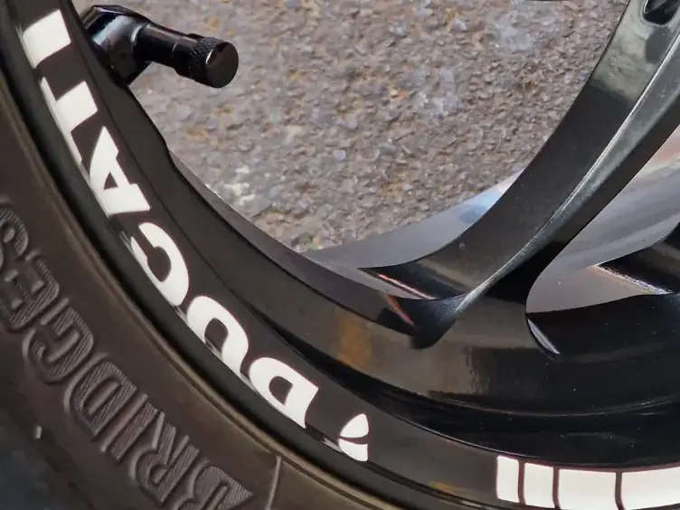

Limpieza total
Tu moto de arriba abajo: carenados, depósito, llantas, motor y escape. Que brille hasta el último rincón.

Mándame un mensaje con tu moto y lo que necesita, y te respondo con el presupuesto.
Quedamos un día y voy yo. Tu moto no sale de casa.
La limpio a fondo, como si fuera la mía, y queda lista para lucirla en tu próxima salida.
Tu moto de arriba abajo: carenados, depósito, llantas, motor y escape. Que brille hasta el último rincón.
La cadena, limpia y bien engrasada. Lo puedes sumar a la limpieza total.
También limpio coches. Escríbeme y lo hablamos.
Presupuesto por mensaje · Servicio a domicilio en Tenerife
Fotos reales de motos de clientes, al terminar el trabajo.

Limpieza total + engrasado de cadena
“Los resultados hablan por si solos.”



Limpieza total
“El color rojo hace que se aprecie la limpieza.”




Limpieza total + engrasado de cadena
“Brillante como el primer día, sin sacarla del garaje.”

Pedro · motero · Tenerife
Soy Pedro, y también soy motero. Sé lo que es querer la moto impecable para la próxima salida y no tener tiempo, o sitio, para dejarla así.
Por eso voy yo a tu garaje.
Escríbeme por Instagram con tu moto (o tu coche) y te respondo con el presupuesto.